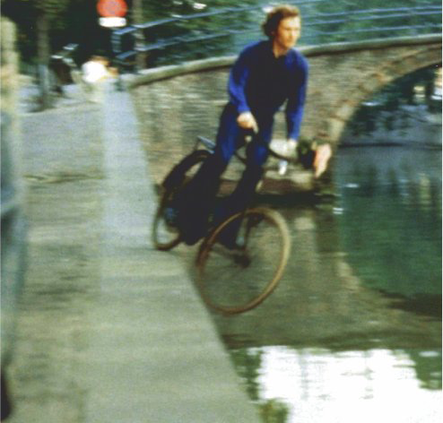
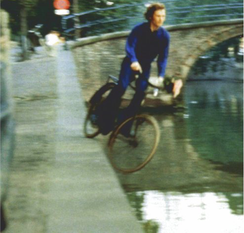

Нидерландец Бас Ян Адер в своих перформансах то падал с крыши, то съезжал на велосипеде в амстердамский канал, но он всегда калечил себя с каким-то юмором, от которого его акции переставали быть страшными. В 1975 году он решил в одиночку переплыть Атлантику. Бас Ян Адер назвал свою работу «В поисках удивительного«, сел на маленькую яхту и отправился c мыса Кейп Код в Массачусетсе в сторону Европы. Противоположного берега океана он так и не достиг: сломанную яхту обнаружили в 250 километрах от побережья США,а тело художника так никогда и не нашли
 В поисках удивительного
В поисках удивительного


 
